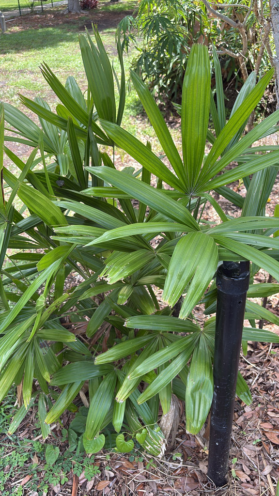

- One of the most shade-tolerant palms in cultivation — grows under closed forest canopy in its native range in southern China, which makes it genuinely useful for shaded positions where most palms fail.
- Has been in cultivation in China for centuries, maintained as a refined ornamental in courtyard and temple gardens. Western gardens have used it since the 19th century.
- The clustering fan-shaped fronds and bamboo-like ringed stems give it a texture that reads differently from most palms in a collection — finer, more refined, more domestic.
- The Little Lady Palm is slow-growing but very long-lived.
- An invaluable solution for dark garden corners — one of the most shade-tolerant palms available, thriving where most plants fail. For Bradenton gardeners struggling under dense Live Oak canopy, Lady Palms are the answer.
- Tucked into a few inconspicuous spots around the park with no signage. Easy to walk past. Worth a second look for the bamboo-like clustering stems.
Non-native. Origin uncertain — likely southern China, though no truly wild population has been confirmed. In cultivation for centuries. Member of Arecaceae — the palm family.
- The Little Lady Palm is one of the most shade-tolerant palms in cultivation, growing happily under a closed canopy where most palms would fail - which is also why it is among the best palms for low-light interiors. It forms slow, tidy clumps of slender, bamboo-like canes wrapped in dark fiber, each topped with glossy, fan-shaped leaves split into broad, blunt-tipped segments.
- It has been cultivated for centuries, especially in China and Japan, where named selections are collected much like bonsai, and no certain wild population is known. The result is a durable, elegant, slow-growing palm that asks little: shade, water, and protection from hard freezes.
- It is completely non-toxic to people and pets, which adds to its popularity as an indoor and patio plant.
Limited direct wildlife value. The dense clustering growth provides some cover for small birds and ground-level invertebrates. Fruit eaten by some birds.
Fan-shaped, divided nearly to the base into narrow segments. Produced in a spreading crown on each stem.
Small, black, berry-like.
Multiple, clustering, slender, ringed — resembling bamboo more than typical palm. Each stem wrapped in dark fiber at the base.
Dense clustering shrub to small palm, typically 6 to 12 feet tall. Slow-growing.
The fine-textured fan fronds and slender bamboo-like ringed stems in a dense cluster are distinctive. One of the few palms that thrives in significant shade.
This isn't a food plant, but it's completely non-toxic to people, dogs, and cats — a safe choice around pets.

- © Randall Carter (CC-BY-NC), via iNaturalist